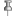

- Содержание
- О программе
- Системные требования
- Описание работы
- Начало работы с программой
- Добавление слова в Закладки
- Повтор слов
- Отслеживаемые слова
- Работа со Словарем
- Форма Словаря
- Вкладка Словарь боковой панели Закладок
- Быстрая фиксация слов
- Настройки
- История
- Прочее
- Функциональность
- Примечания
О программе
WordsBrowser - программа для изучения слов и выражений английского языка с помощью популярных онлайн-словарей и переводчиков.
С помощью данной программы вы можете быстро сохранять ссылки и повторять слова - в том числе составные - например, фразовые глаголы или выражения.
Системные требования
Операционные системы: Windows XP, Windows 7.
Дополнительно: Microsoft .Net Framework 4 - 4.5.
Описание работы
Основное назначение программы WordsBrowser - помощь в изучении слов и выражений английского языка, используя сайты поддерживаемых онлайн-словарей.
Чтобы сохранить слово для последующего изучения, нужно перейти на сайт онлайн-переводчика и, получив перевод изучаемого слова, добавить его в Закладки.
В дальнейшем слово можно изучать либо через Повтор, слов либо с помощью Словаря самой программы.
Основные возможности программы подробно описаны ниже. Полный функционал программы представлен в разделе "Функциональность".
Начало работы с программой
Программа не требует установки, достаточно скачать Zip-архив по предлагаемой ссылке и развернуть в любой удобной директории. При первом запуске программы, после принятия условий Лицензионного соглашения Вам будет предложено добавить поддерживаемые программой сайты онлайн-словарей. Рекомендуется оставить все предложенные варианты и нажать Ok.
После открытия программы добавленные словари будут находиться в папке Сайты на боковой панели Закладок. Вы всегда можете добавить в эту папку ссылку на любой сайт, однако для поддерживаемых онлайн-словарей название новой закладки автоматически определяется по ссылке на страницу с переводом слова. Автоопределение реализовано в плагинах, каждый из которых соответствуюет своему онлайн-словарю. На данный момент используются следующие плагины:
- ABBYY Lingvo Live - для использования с Живой словарь ABBYY Lingvo.
- Wiktionary - для использования с English-language Wiktionary.
- Yandex - для использования с Яндекс.Переводчик.
При первом запуске программы загружаются все плагины. Если Вы предпочитаете пользоваться не всеми из предложенных онлайн-переводчиков, всегда можно выгрузить ненужные плагины из памяти через меню Инструменты > Настройки, вкладка Плагины.
Получить перевод интересующего Вас слова можно следующими способами:
- перейдите на сайт онлайн-словаря, поддерживаемого программой и введите слово в поле поиска данного словаря.
- если Вы находитесь на странице с переводимым текстом, и возможно обычное выделение текста, нажмите на кнопку
 на панели поиска.
на панели поиска.
Перед первым использованием кнопку необходимо настроить, т.е. выбрать сайты поддерживаемых онлайн-словарей, на которых будет открываться выделенное слово при нажатии кнопки.
Для этого откройте выпадающий список кнопки и выберите кликом иконки сайтов. После этого при клике на кнопке выделенное слово будет открываться на каждом из выбранных сайтов.
Если ничего не выбрано, появится предупреждающее сообщение. Выбор сайтов сохраняется в пользовательских настройках и остается прежним после перезапуска программы.
Добавление слова в Закладки
Ссылки на слова можно сохранять в Закладках
Перейдите на сайт онлайн-переводчика и, если перевод Вас устраивает и Вы хотите сохранить на него ссылку, добавьте ее в Закладки одним из предлагаемых способов:
- Нажав на кнопку
 на Панели навигации
на Панели навигации - Меню Закладки > Добавить слово
- Сочетанием клавиш Ctrl+D
- В плавающей полупрозрачной панели в правом нижнем углу программы.
Если сайт, с которого получен перевод, принадлежит к поддерживаемым, в форме "Добавление в Закладки" поле Слово будет заполнено автоматически. Иначе поле будет пустым и придется заполнить его самостоятельно.
Закладки слов хранятся в папках, соответствующих датам. Поэтому в форме добавления слова можно выбрать дату, к которой относится сохраняемое слово. По умолчанию выбирается текущая дата, однако из выпадающего списка можно выбрать папку уже существующей даты.
Выбранную дату можно закрепить для повторного использования в качестве папки, куда будут добавляться сохраняемые слова-ссылки. Для этого нажмите на кнопку  в форме "Добавление в Закладки". После этого форма будет открываться с закрепленной датой в поле "Добавить в". Для открепления даты нажмите на кнопку .
Если вы хотите закрыть вкладку, с которой добавляете слово, сразу после его добавления, установите соответствующий флажок на форме "Добавление в Закладки".
Используя контекстное меню, сохраненную закладку в дальнейшем можно:
- Открыть
- Открыть в новой вкладке
- Удалить
- Переименовать
- Открыть на сайте поддерживаемого онлайн-переводчика- через меню "Открыть все слова на сайте".
Удалить можно также и всю папку, содержащую слово. Для этого воспользуйтесь контекстным меню всей папки со словами. Перед удалением программа выдаст предупреждение, поскольку восстановить папку и все входящие в нее закладки будет невозможно.
В состав контекстного меню папки также входят подменю:
- Открыть все во вкладках
- Управление словами – открывает форму Словаря со словами этой папки
- Сохранить все открытые вкладки
- Обновить
- Повторить слова этой папки
- Открыть все слова на сайте - позволяет открыть все слова этой папки на одном из сайтов поддерживаемых онлайн-словарей
- Google Ngram
В закладках можно осуществлять поиск. Для этого нажмите на кнопку на Панели поиска, либо Alt+B, либо пункт меню в меню "Закладки", и введите искомое слово в текстовое поле в Закладках на боковой панели. Данная возможность доступна только если на боковой панели выбрана панель Закладок. Соответствие проверяется с началом слова. Поиск начинается с выделенной папки, или, если таковая отсутствует, с первой в хронологическом порядке. Если слово или его часть найдена, первая папка со словом становится выделенной и разворачивается. Если слово не найдено, выдается соответствующее сообщение.
Можно также сохранить все открытые вкладки. Для этого воспользуйтесь одним из следующих способов:
- Откройте контекстное меню той папки, куда хотите сохранить вкладки, и выберите подменю Сохранить все открытые вкладки
- Выберите подменю Сохранить все открытые вкладки из основного меню Закладки.
- Нажмите Ctrl+Shift+D
Во всех случаях, кроме первого, если ни одна папка не активна, будет предложено выбрать папку для сохранения слов. При этом наименование закладок будет определено автоматически в соответствии с подключенными плагинами.
Повтор слов
Сохраненные ссылки на слова с переводом можно повторять. Пользовательский интерфейс по работе с Повтором слов находится в Панели повтора и в меню Закладки > Повтор слов.
Процесс повтора слов заключается в формировании состава повторяемых слов и последовательном переходе на ссылки через заданный интервал времени.
Период, тип, и сортировка повтора задаются в форме Настройки повтора слов, которая открывается по кнопке  из Панели повтора.
из Панели повтора.
В том, каким образом слова повторяются, существенным является выбор Типа повтора – Все или Отслеживаемые. Если выбрано Все, можно указать сортировку, а также выбрать даты для повтора. В случае выбора Отслеживаемых указанные параметры не доступны. Подробнее о работе с Отслеживаемыми словами см. ниже.
Выбранные параметры повтора сохраняются как пользовательские настройки. Можно ограничить повторяемые слова одной датой и не заходя в "Настройки". Для этого выделите папку в Закладках и выберите меню "Повторить слова этой даты". Если в настройках повтора выбран тип Отслеживаемые, повторяться будут только те отслеживаемые слова, которые принадлежат выбранной папке. В процессе повтора можно убрать слово из списка повторяемых в данный момент с помощью флажка с подсказкой "Исключить слово из текущего повтора", который становится видимым при нажатии на паузу. Данная возможность отсутствует, если число повторяемых слов меньше двух. Если выбран Тип повтора «Отслеживаемые», то при повторе в панели повтора видна информация о состоянии изучения слова(см. следующий раздел). В паузе повтора можно изменить это состояние путем нажатия на соответствующую кнопку, а также удалить текущее слово из Отслеживаемых.
Запуск повтора слов осуществляется кнопкой Начать повтор слов (картинка) на Панели повтора. Вы можете также запустить повтор, не связанный с настройками, из формы Словаря(см. ниже), выделив нужные слова и нажав кнопку Повторить.
Отслеживаемые слова
Слова, изучение которых Вы хотели бы взять под особый контроль, предлагается добавлять в Отслеживаемые. Ими могут быть, например, часто используемые, но трудно запоминаемые слова. Повтор таких слов осуществляется методом интервальных повторений.
Добавить слово в отслеживаемые можно через контекстное меню самого слова в Закладках, а также в паузе повтора, нажав на кнопку  .
.
Отслеживаемое слово имеет 3 состояния по отношению к частоте его повторения:
- Не помню(в этом состоянии оно оказывается после добавления) - слово показывается при каждом повторе
- Хорошо – слово включается в текущий повтор, если прошло 3 и более дней после его последнего повтора
- Легко - слово включается в текущий повтор, если прошло 15 и более дней после его последнего повтора
При переходе на отслеживаемое слово из Закладок, боковой панели словаря, форм словаря или быстрой фиксации слов в панели повтора появится кнопка "Как повтор". При нажатии на эту кнопку текущее время будет зафиксировано как время последнего повторения, так, как это происходит при повторе слов. Удалить слово из Отслеживаемых можно при повторе(см.выше) или из формы Словаря(см. ниже). В последнем случае выберите Тип повтора «Отслеживаемые», выберите удаляемые слова и нажмите «Удалить из Отслеживаемых».
Работа со Словарем
Повторять слова можно также используя Словарь, представляющий список всех сохраненных программой слов.
Работа со Словарем может осуществляться двумя способами:
- открывая форму Словаря из Панели поиска, нажав на кнопку Управление словарем или в меню "Закладки > Словарь".
- пользуясь боковой панелью Закладок, вкладка Словарь. Для быстрого открытия вкладки со Словарем нажмите сочетание клавиш Ctrl + Q.
Форма Словаря
Откройте форму, найдите нужные слова, отметьте их и нажмите Показать выделенное. Ссылки на слова будут отображены на новых вкладках.
Из формы Словаря можно удалить сразу несколько слов. Для этого выделите флажком удаляемые слова в таблице и нажмите кнопку Удалить.
Возможна работа только со словами конкретной даты. Для этого воспользуйтесь контекстным меню папки с датой и выберите подменю Управление словами.
Вкладка Словарь боковой панели Закладок
Перейдите на вкладку Словарь боковой панели и наберите искомое слово в текстовом поле. При необходимости можно посмотреть перевод слова в поддерживаемых онлайн-словарях через выпадающий список кнопки "Найти слово на сайте...".
Можно настроить работу с этой кнопкой так, чтобы при клике на ней искомое слово сразу открывалось на сайтах поддерживаемых онлайн-словарей. Эту возможность и список сайтов можно задать, выбрав меню "Настройка" в выпадающем списке кнопки "Найти слово на сайте...". Откроется форма Настроек на вкладке Словарь, где можно выбрать опцию "Открыть слово на выбранных сайтах" и задать флажками в таблице сайты поддерживаемых онлайн-словарей.
В Словаре боковой панели также можно искать выделенные на странице слово или группу слов.
Для этого выделите необходимый фрагмент текста и нажмите на кнопку  на Панели поиска, либо Alt+F, либо пункт меню "Поиск выделенного в Словаре" в меню Закладки.
Если слово – целиком либо совпадая по последним буквам - найдено в словаре, в словаре будут отображены только совпадения. В противном случае откроется форма Быстрой фиксации слов (см. ниже) с выделенным словом в поле Новое слово.
на Панели поиска, либо Alt+F, либо пункт меню "Поиск выделенного в Словаре" в меню Закладки.
Если слово – целиком либо совпадая по последним буквам - найдено в словаре, в словаре будут отображены только совпадения. В противном случае откроется форма Быстрой фиксации слов (см. ниже) с выделенным словом в поле Новое слово.
Быстрая фиксация слов
Если вы хотите быстро добавить слова переводимого текста, откладывая их перевод и возможное сохранение на более позднее время, можно воспользоваться формой Быстрой фиксации слов, нажав на кнопку на Панели поиска, либо Alt+C, либо пункт меню в меню Закладки. Функциональность данной кнопки продублирована также в плавающей полупрозрачной панели в правом нижнем углу программы.
Если форма уже открыта, она активируется.
Фиксируемое слово вводится в поле "Новое слово". По мере ввода искомого слова на правой панели формы отображаются найденные соответствия из Словаря. Если вы решили зафиксировать слово, по окончанию ввода нажмите Enter либо нажмите кнопку "+".
Зафиксировать слово можно также с помощью боковой панели словаря, нажав на кнопку, идентичную по виду кнопке на Панели поиска, либо нажав на клавишу Enter. Форма в этом случае не открывается, информация о том, что слово зафиксировано, выводится в строке состояния.
Для удаления зафиксированных слов в форме выделите слово флажком в таблице и нажмите кнопку Удалить. Отредактировать слово можно в самой таблице. Зафиксированные слова сохраняются между запусками программы.
Зафиксированные слова можно открыть на сайте поддерживаемого онлайн-словаря.
Для этого выделите флажком слова в таблице и выберите онлайн-словарь для просмотра перевода из выпадающего списка кнопки .
Если Вы открыли текст на английском языке в самой программе WordsBrowser, можно зафиксировать слово, просто выделяя необходимый фрагмент текста в открытой веб-странице и активируя форму Быстрой фиксации слов. Форма откроется с выделенным фрагментом в поле Новое слово.
Настройки
В форме Настройки меню Инструменты на первой вкладке можно сохранить Домашнюю страницу и отключить Заставку. На второй вкладке формы можно настроить Плагины. Третья вкладка предназначена для настройки Словаря - см. раздел Работа со Словарем. На вкладке Разное можно изменить провайдера иконки сайтов. Для того, чтобы начал действовать новый провайдер, необходимо будет перезайти в программу.
История
Программа хранит историю посещенных сайтов. Журнал располагается на второй вкладке Боковой панели и дает возможность представления истории По дате, По сайту и По порядку посещения.
Прочее
Вы можете осуществлять навигацию по папкам с помощью Календаря. Для этого откройте меню Закладки > Календарь. Даты, для которых существуют папки Закладок, будут выделены жирным шрифтом.
В Панели поиска можно пользоваться поисковыми системами Google, Yandex или Bing.
Вы можете закрыть все открытые вкладки через соответствующее пункт в меню "Закладки". При этом останется одна вкладка со страницей по умолчанию. Активную вкладку вы можете закрыть через ее контекстное меню либо двойным кликом по ней. Возможно также перетаскивание вкладок.
В меню Инструменты можно вызвать Калькулятор.
Можно посмотреть график частотности слов любой папки с закладками из ее контекстного меню, подменю Google Ngram.
Для открытия ссылки из другого браузера (например Firefox или IE), минуя буфер обмена, просто перетащите иконку из адресной строки браузера на открытую вкладку программы.
Предоставлен минимальный функционал, обычно обеспечиваемый браузерами: работа со вкладками, печать, сохранение и поиск по странице и т.п.
Для получения дополнительной информации по работе с программой воспользуйтесь меню Помощь > Помощь.
Функциональность
- Возможность отображать и сохранять слова-ссылки на веб-страницы
- Автоопределение названия новой закладки для поддерживаемых онлайн-словарей
- Возможность редактирования сохраненных закладок
- Возможность подключения/отключения плагинов для поддерживаемых онлайн-словарей
- Интерактивный и настраиваемый повтор сохраненных слов-ссылок
- Работа с сохраненными слов-ссылками как со Словарем. Возможность поиска в Словаре выделенного на странице фрагмента текста
- Возможность быстрой фиксации слов для отложенного перевода, в том числе из отрытой веб-страницы.
- Возможность изучать слова методом интервальных повторений.
- Сохраняемые настройки пользовательского интерфейса, возможность сохранить домашнюю страницу
- Ведение истории посещенных сайтов
- Возможность навигации по папкам с закладками с помощью Календаря
- Возможность выделять цветом любой фрагмент текста.*
- Удобная работа со вкладками
- Возможность быстрого поиска в Интернете с помощью поисковых систем Google, Yandex или Bing
- Минимум функционала, обычно обеспечиваемый браузерами: работа со вкладками, печать, сохранение и поиск по странице и т.п.
Примечания
*Добавлено в последней версии